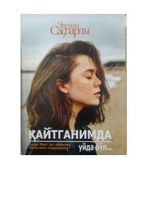

QUInsoniy tuyg'ular va taqdir sinovlari haqidagi ta'sirchan falsafiy asar.
Ushbu asar insoniy tuyg'ular, ayriliq va baxt tushunchalari haqidagi chuqur falsafiy mushohadalarga boy. Muallif hayotning murakkabliklari va inson qalbining tubidagi kechinmalarni ta'sirchan uslubda bayon etadi.